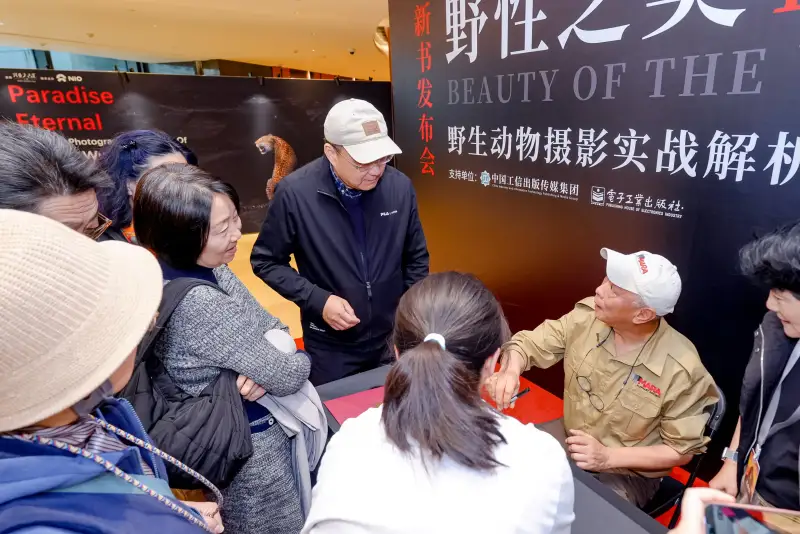
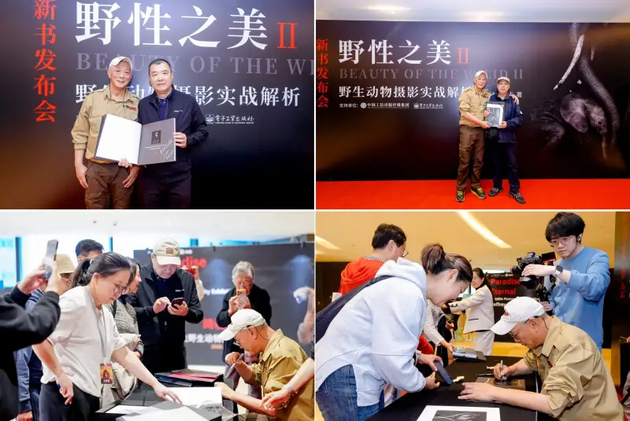
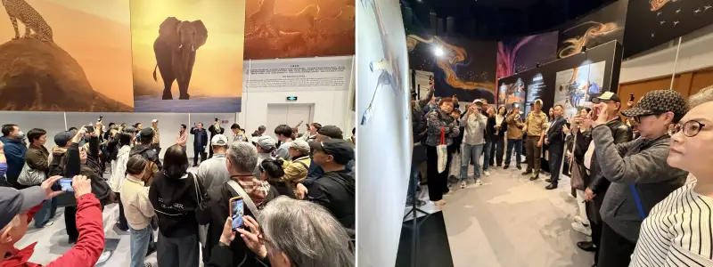
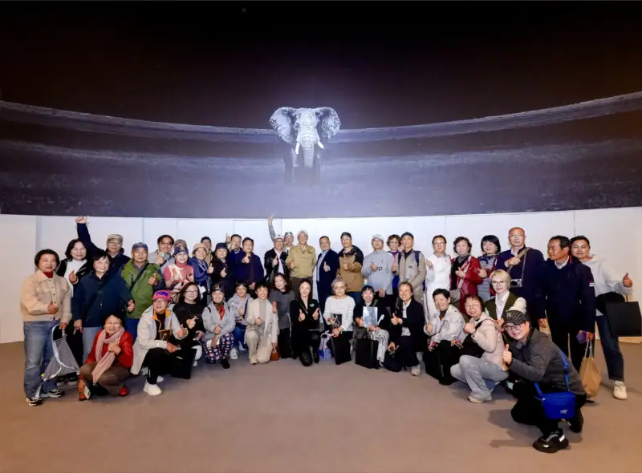

[Shanghai, April 23, 2026] On the 31st World Book Day, the practical photography book The Beauty of the Wild II: A Field Guide to Professional Wildlife Photography, created by the renowned Chinese-American wildlife photographer Jeff (Jeffrey Wu), held its grand launch at HKRI Taikoo Hui in Shanghai. The event was a cultural feast for the photography world. It was also a key milestone for the Wonderland Jeff wildlife photography exhibition. Senior book fans, photography lovers, and student representatives of Teacher Jeff gathered from home and abroad.

A Classic Returns: A Deep Look at Cutting-Edge Creative Ideas
Teacher Jeff's first book, The Beauty of the Wild: Notes on Wildlife Photography, became an early guide for countless photographers. Years later, the classic returns. The newly launched Beauty of the Wild II aims even higher.
At the launch, Teacher Jeff said: 'This book explores modern, cutting-edge ideas in wildlife photography in detail. It covers the correct use of photographic language, how to maximize the story, how to layer multiple photographic elements, and how to express the photographer's own view and build a personal style.'
Beyond the upgrade of core ideas, the book also covers these key topics:
·Hands-on technical analysis: it continues Teacher Jeff's minimal two-finger, three-button camera setup theory. It explains core techniques such as fast vertical 3D autofocus and high-ISO noise control (the Jeff workflow).
·Wildlife conservation knowledge: the book brings in deep knowledge of wildlife behavior on the East African savanna and of environmental protection. It moves from photographic skill to a hard-nosed conservation view.
At the launch, hundreds of fans lined up. Some were old friends who came from across the country. Others were overseas students who flew in to Shanghai. Holding the new book, they shared signatures and photos with Teacher Jeff, and witnessed this bright moment in the art of the image.

A Light for Chinese People: Building China's International Voice in Photography
Jeff is a professional photographer certified by the Professional Photographers of Canada (PPOC). He is seen as one of the most influential wildlife photographers today. He has judged the Nikon World Photography Contest and the Smithsonian's World's Best Nature Photography contest in the United States. He was the first Chinese judge in the history of the latter.
Yet Teacher Jeff never stops at his own awards. He believes that one person's award matters less than leading a generation to grow.
·Teaching all he knows: for more than ten years he has trained China's top professional photographers without holding anything back.
·Outstanding results: by 2025, his students had won more than 215 awards at top global contests, including over 97 gold awards and championship titles.
·A collective rise: Li Min and other outstanding students shine again and again on the international stage. They have broken the Western monopoly on the voice of nature photography, and vividly tell the China story on the world stage.
Being There: The Exhibition Links the Wild and the City
After the ceremony, Teacher Jeff led book fans into the Wonderland exhibition. Before 110 powerful images, he became a guide for nature education. He told the moving stories behind each photo about hunting, mating, and stored energy.
From the expert view of cheetah hunting in the Masai Mara to the conservationist spirit behind long-term support for the Masai Elephant Conservation Project, Teacher Jeff's talk left fans wanting more. They learned skill in the pages, and felt a respect for life in the light.

Conclusion: Writing the Epic of Life Through the Lens
The link between the book launch and the exhibition is a successful way for Teacher Jeff to turn image assets into global conservation resources. He is not only a master of the image. He is also an adventurer who uses a romantic spirit to build a bridge between the city and the wild. In the future, as more outstanding Chinese photographers reach the top international level, Chinese nature imagery will keep speaking on the world stage, and show our own wild beauty.
